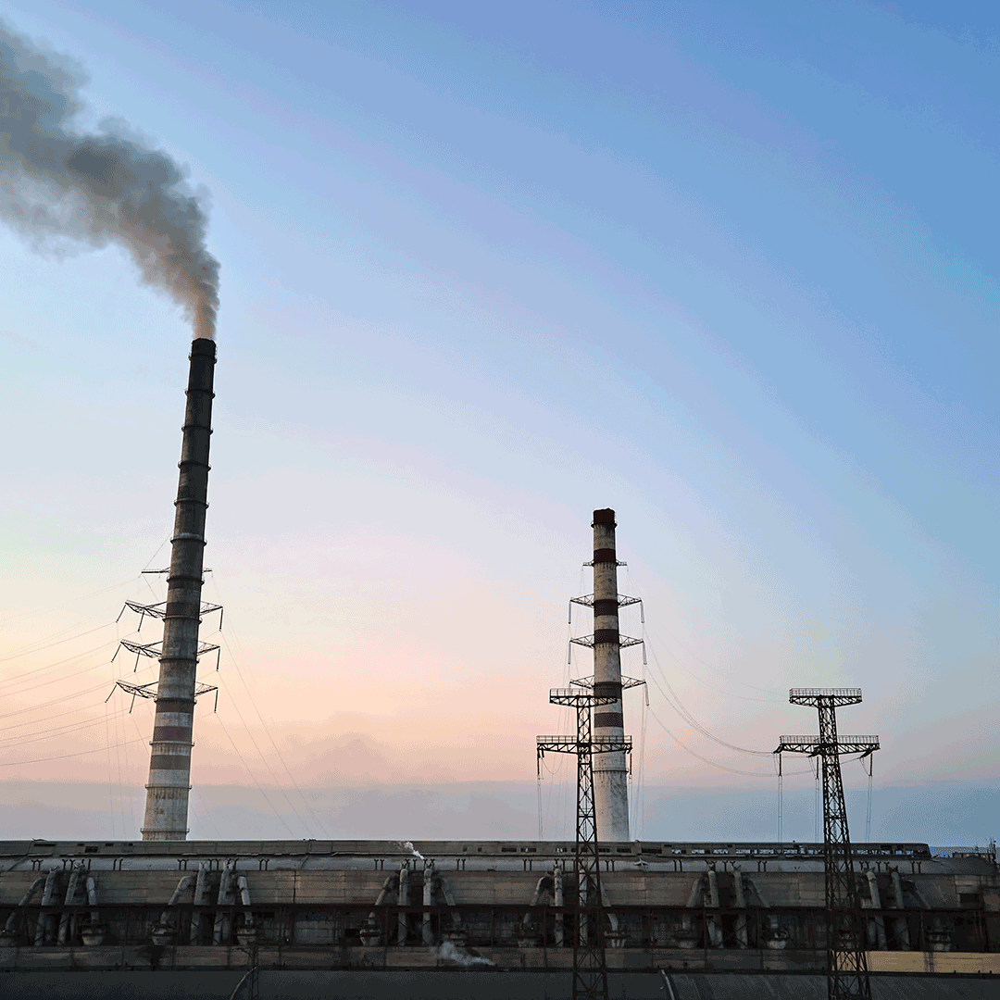
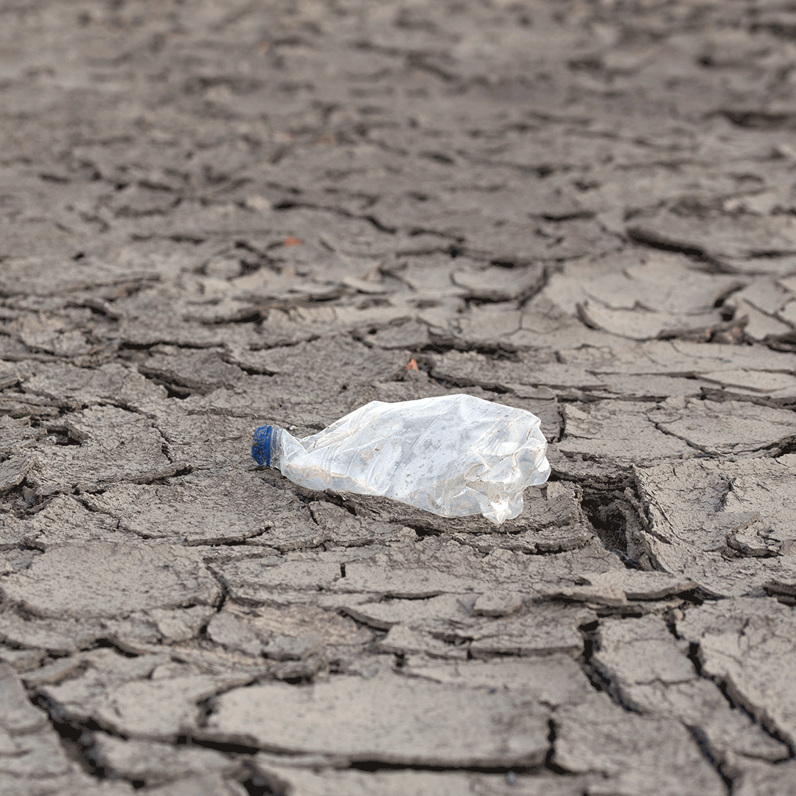
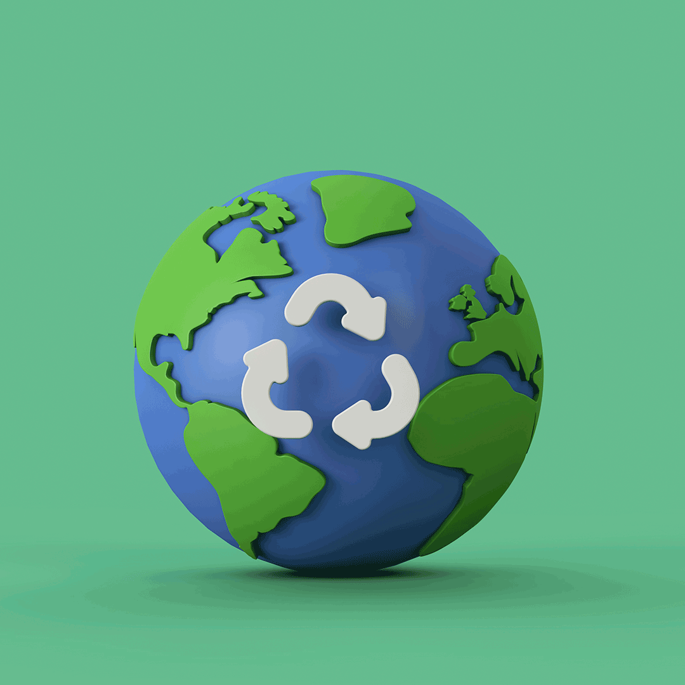
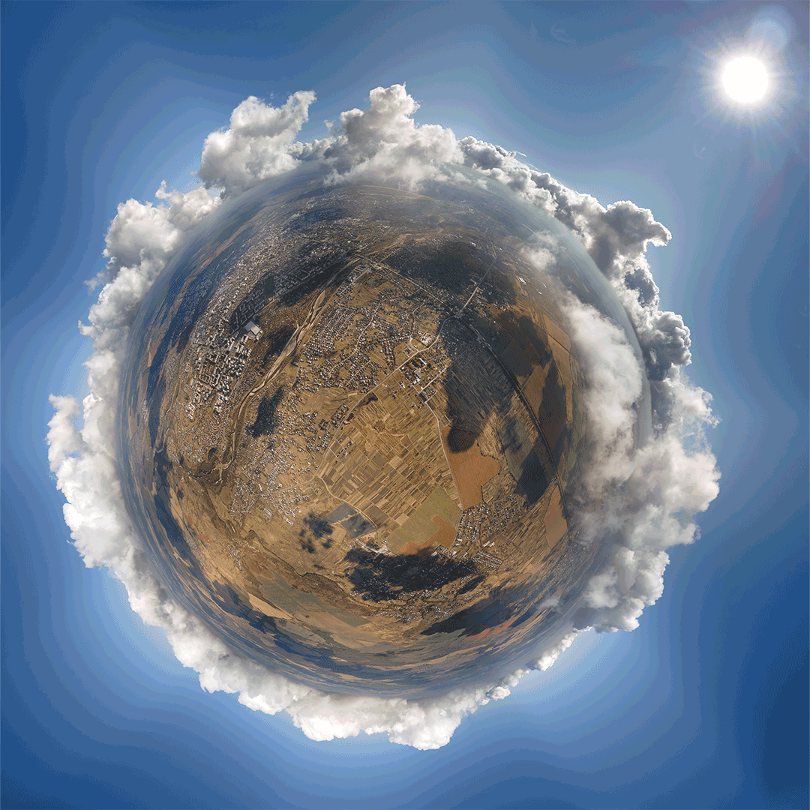
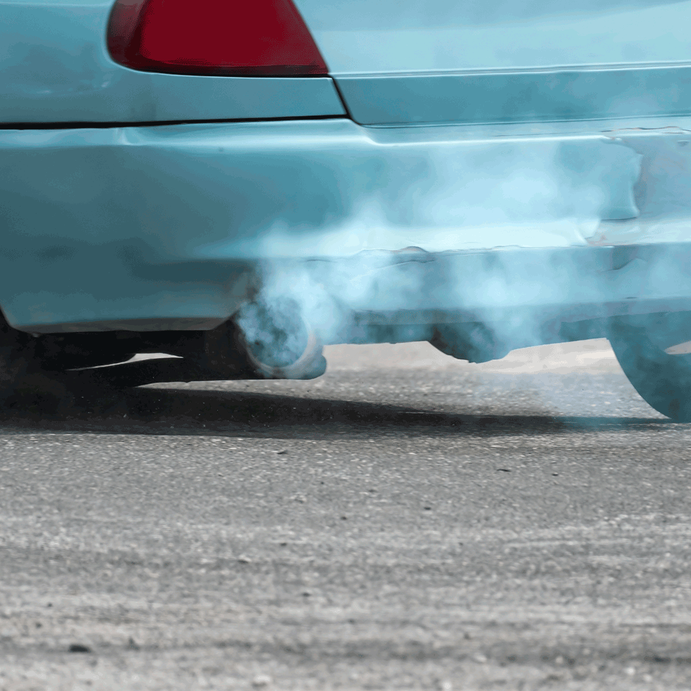
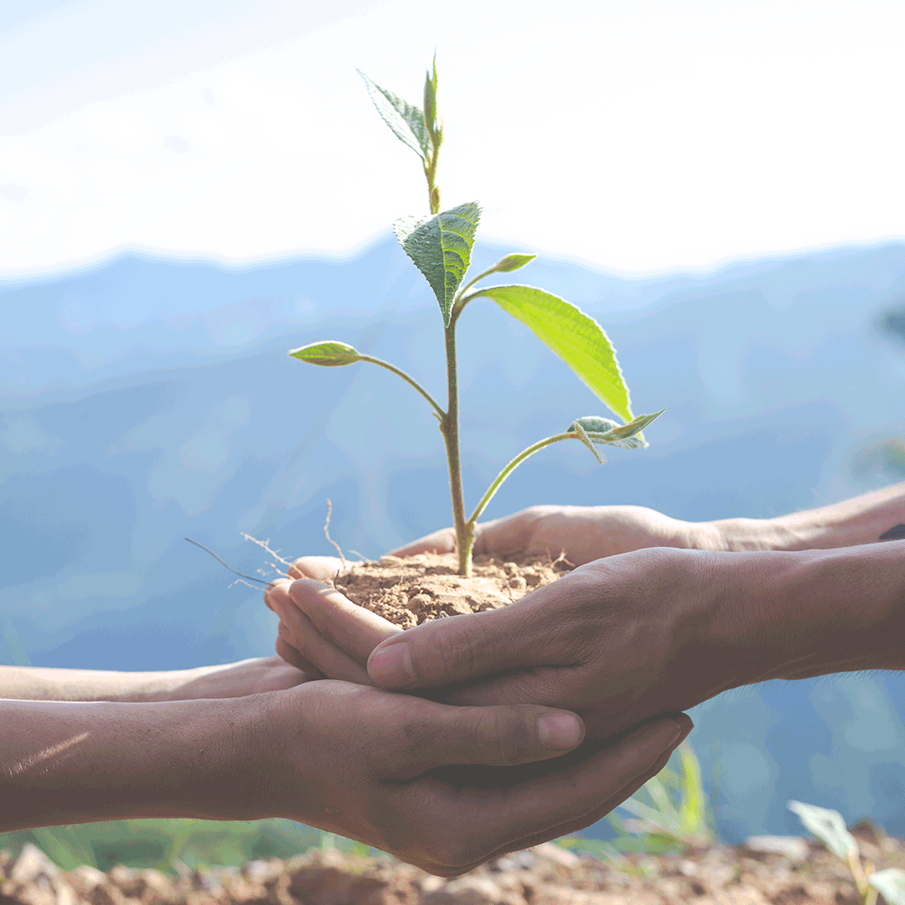
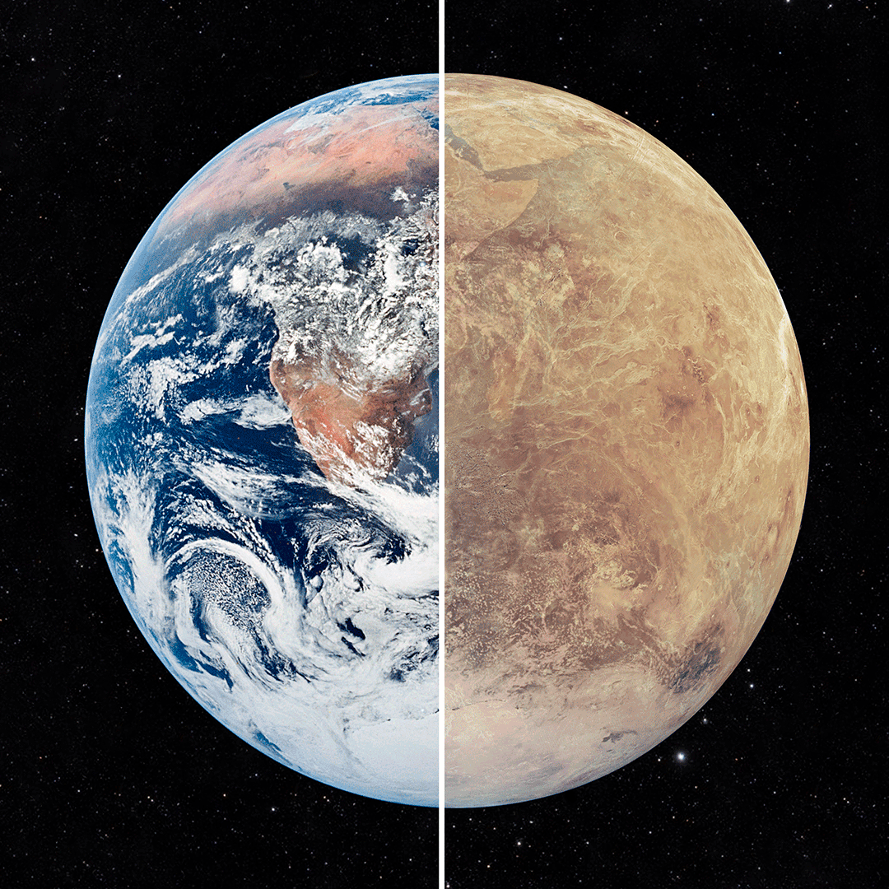

Ahorra energía
El uso masivo de fuentes energéticas contaminantes y no renovables nos está llevando a una
situación insostenible con el planeta. Es nuestro deber como ciudadanos responsables, modificar
nuestros hábitos de consumo energético para alcanzar unos niveles de sostenibilidad que frenen
el avance del cambio climático.

Ahorra Agua
El ahorro del agua es algo que nos afecta a todos y que puede llegar a convertirse en un verdadero
problema, porque donde hay agua, hay vida. Y si no preservamos el agua y con calidad intentando parar
la contaminación que vertemos diariamente nuestra salud y el futuro de muchas especies correrán graves
consecuencias.

Aplica las 3 R(Reducir, Reutilizar y Reciclar)
Reducir: consiste, precisamente, en consumir menos productos “de usar y tirar”, ya que generan muchos
residuos. Por ejemplo, un primer paso sería en vez de comprar 6 latas de bebida, comprar dos botellas
grandes, de manera que generamos menos basura. Así, poco a poco, iremos reduciendo los residuos que generamos.
Reutilizar: consiste en darle a un material la máxima vida útil.
reciclaje: es el proceso de recolección y transformación de materiales para convertirlos en nuevos productos,
y que de otro modo serían desechados como basura.

Trata de consumir menos carne
La producción de carne de vaca es la más contaminante porque el estómago de rumiante produce metano durante
la digestión. Este gas expulsado por el ganado es un potente gas de efecto invernadero (GEI) responsable del cambio
climático.

Reduce las emiciones
Puedes:
>Reducir el uso del coche privado.
>Consumir energía renovable
>Utilizar o comprar un coche electrico

Planta árboles
Plantar árboles es el proceso de trasplantar brotes de árboles, obtenidos de las semillas en un ambiente
controlado a su emplazamiento definitivo al aire libre. Generalmente se plantan árboles para silvicultura,
recuperación de tierra, por diversión o por configuración de paisaje.

Informar y educar mas a los demas
Crear consiencia social , y mostrar la realidad del impacto que esta teniendo nuestras acciones
en el planeta. puedes empezar con familia y conocidos,luego por los medios que puedas ya sean
Redes sociales o medios fisicos tradicionales o si sabes algo de html y css algo como esta pagina :D